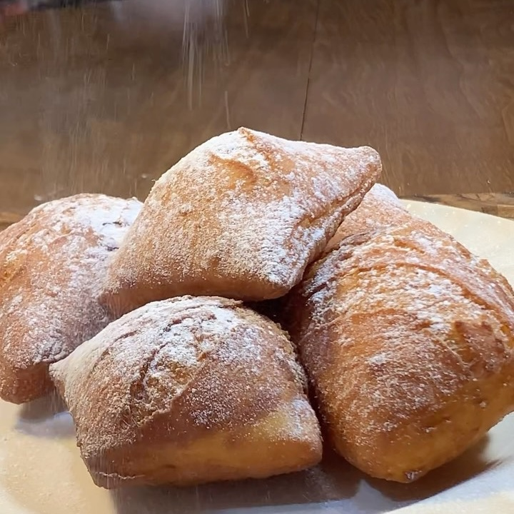

❤️Beignets
Ingredientes:
- 300g de harina de trigo
- 200ml de leche
- 1 cucharada de azúcar
- 1 cucharada de levadura
- 2 cucharadas de mantequilla
Instrucciones:
- Servir un vaso de leche tibia y añadir una cucharada de azúcar y una de levadura. Mezclar bien.
- En un bol, colar la harina. Ya listo agregar un huevo y la mezcla del vaso. Mezclar bien.
- Agregar la mantequilla y revolver.
- Tapar y dejar reposar la masa.
- Extender la masa en papel de horno (espolvoreado con harina). Cortar en cuadrados.
- Freír en una olla con aceite los cuadrados. Ya dorados, sacar de la olla y servir con más harina y
miel.